Games and Graphics Level 3
Contents
Unity
Location Research
https://www.atlasofwonders.com/2022/09/where-was-the-rings-of-power-filmed.html
Lord of the Rings: Rings of Power
Fiordland National Park, New Zealand - Lake Quill
Anawhata Beach, New Zealand
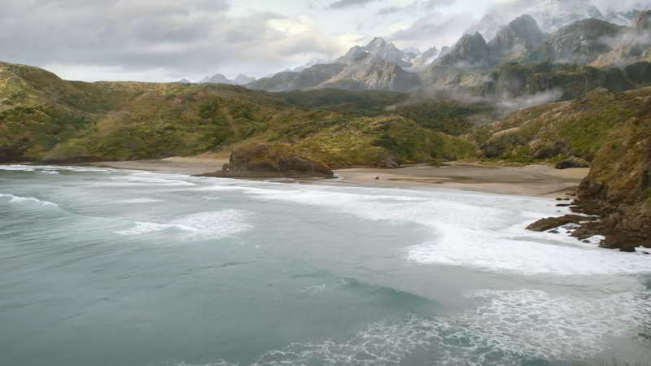
Windsor Great Park, England
Game of Thrones: House of Dragons
Ogwen Valley, Gwynedd, Wales

Llanddwyn Beach, Anglesey, Wales
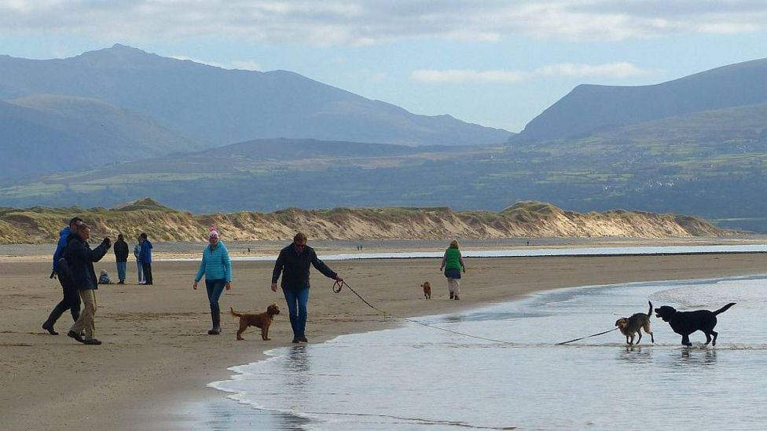
Dinorwig Quarry, Gwynedd, Wales
Film Footage
https://www.youtube.com/watch?v=Vy-bIOnavyc
https://www.youtube.com/watch?v=-0cT2TG1ki4
Local Imagery
River Ribble, West Bradford
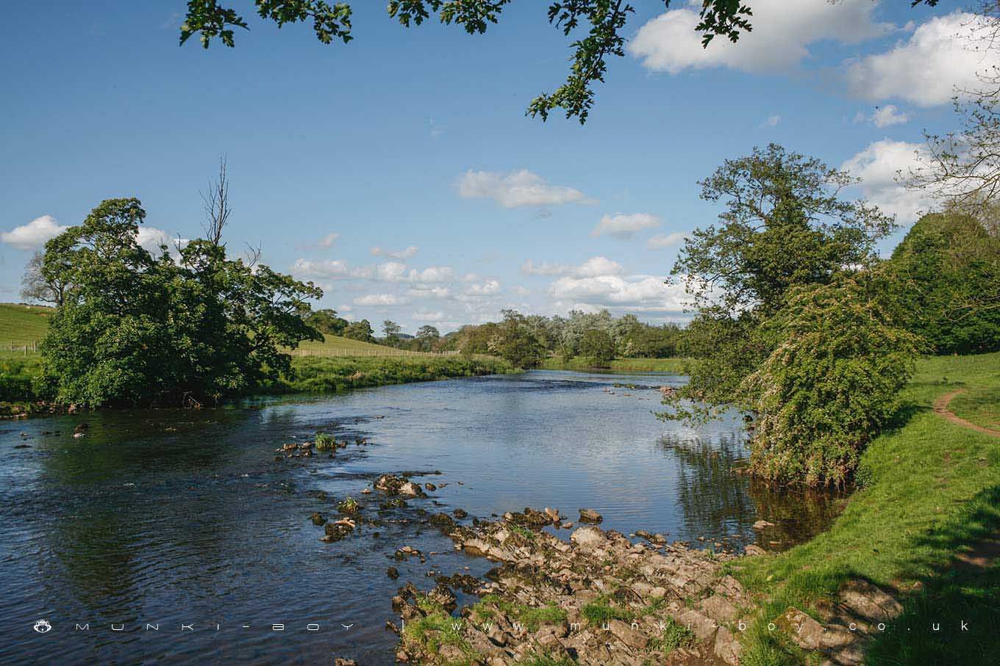
Ariara Island (Philippines)
I did some research on private islands and found this

https://www.vladi-private-islands.de/en/islands-for-rent/for-rent/pacific-ocean/philippines/ariara-island
My Island
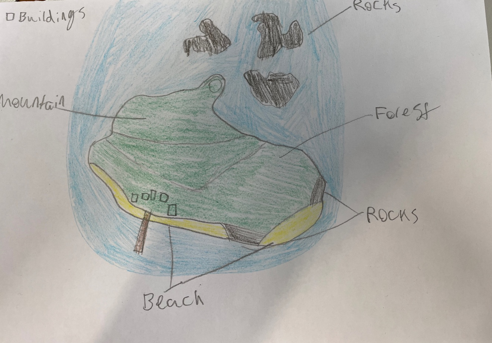
Unity
After creating the project, the first thing to do is create Terrain, this can be done by going to GameObject > Terrain
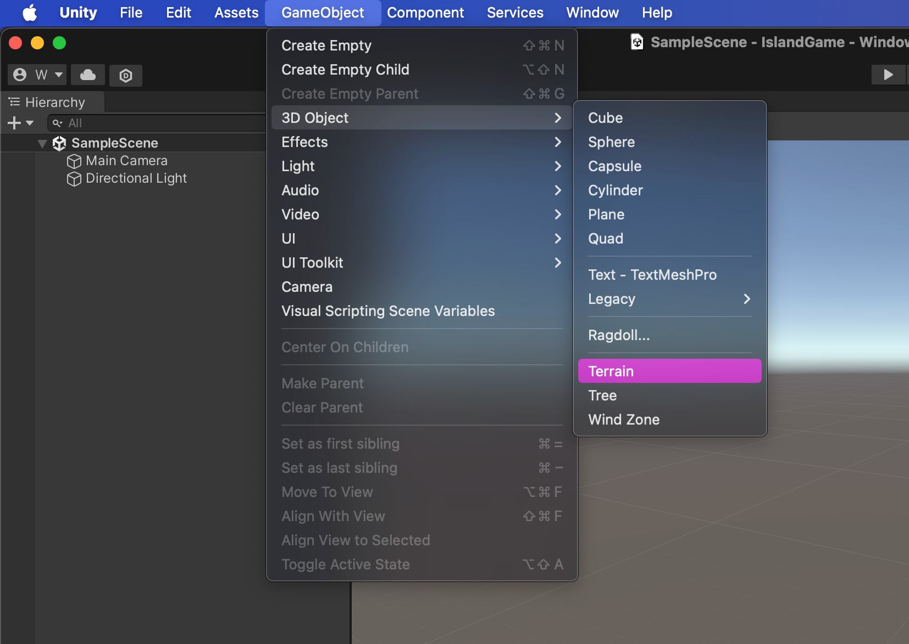
Right now it is just flat, so to change that you go under the Inspector widget and select Raise or Lower Terrain.
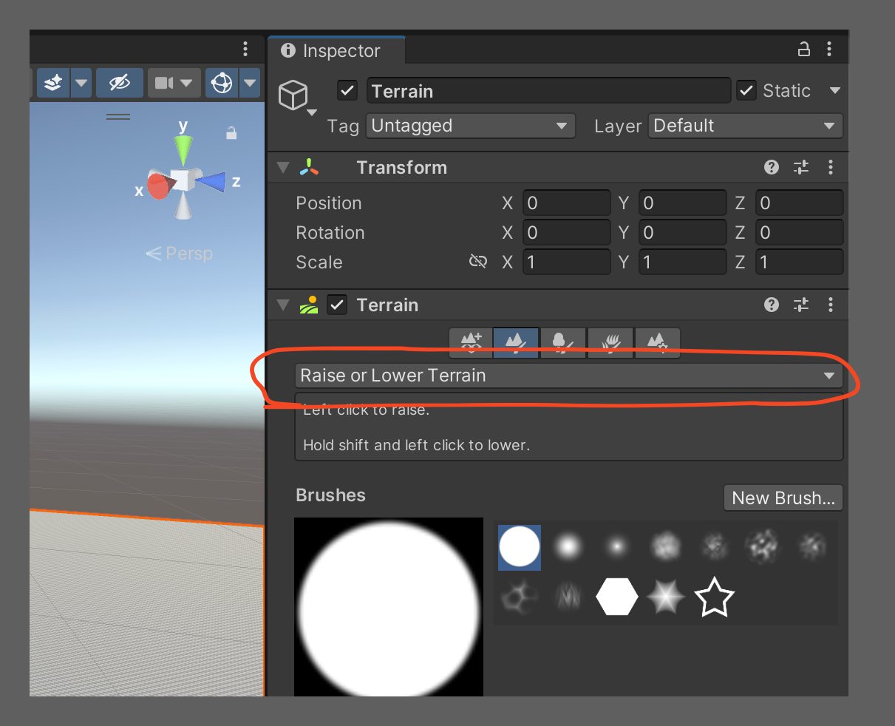
With the terrain object selected, you can now draw the terrain in, Holding down the left click button for longer will make it taller. To make it smaller, you can hold shift and do the same thing.
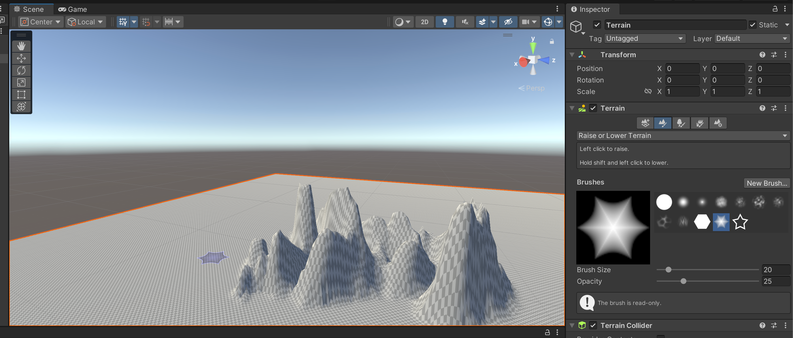
Smooth Height does just about what you would expect, it smoothes out the terrain. It is most effective on the jagged edges that sometimes arrise.
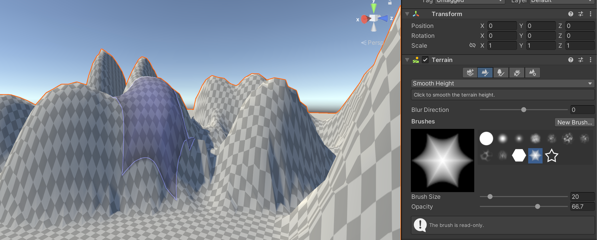
Set height allows you to set a maximum height, and it will never go above the height entered.
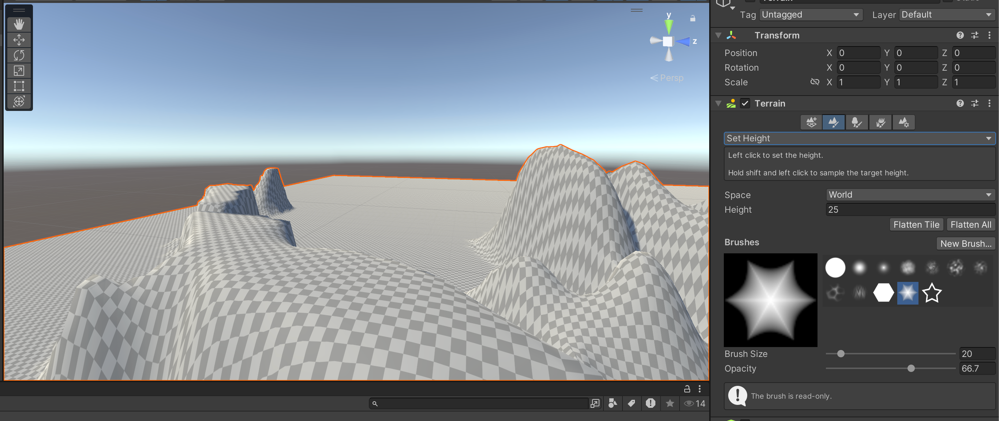
Next up is adding textures. Go to paint textures, Create Layer and then
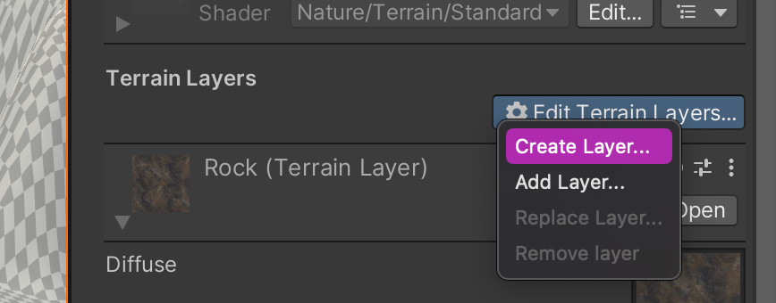
Rain Effect
This can be added to the scene and it will add a rain particle effect. This is simply an asset that another person has made.
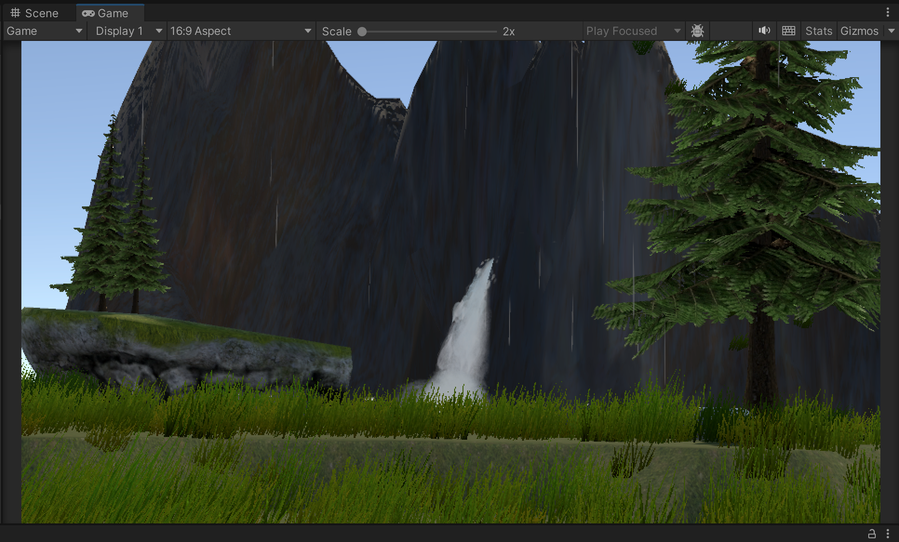
The rain effect can be controlled by opening un the heirarchy and modifying the properties in Inspector.
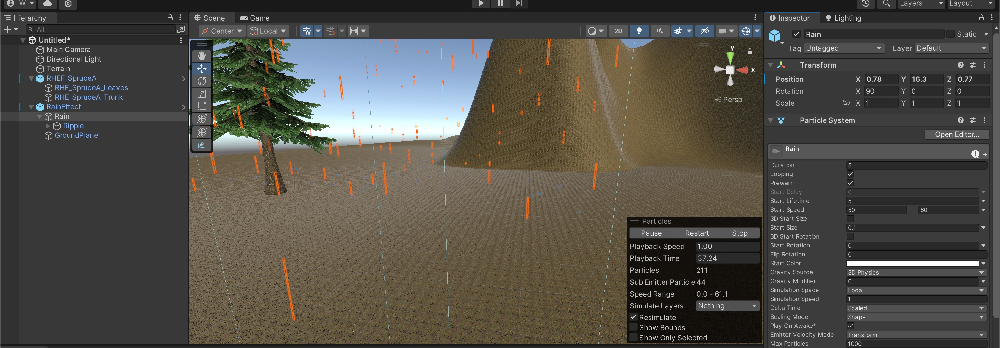
You can add normal and mask maps to a texture which makes them look less flat.
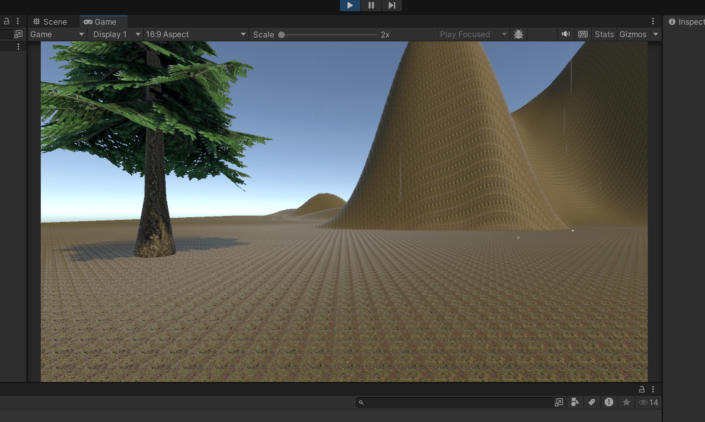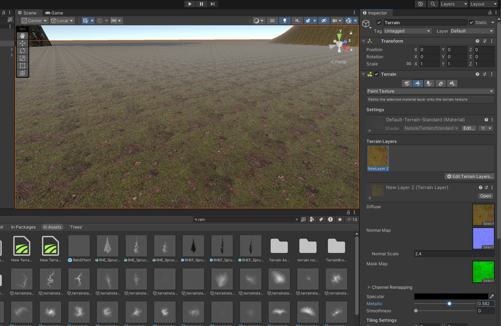
Creating a sun and atmosphere
First create a new material by right clicking in assets, Create > Material.
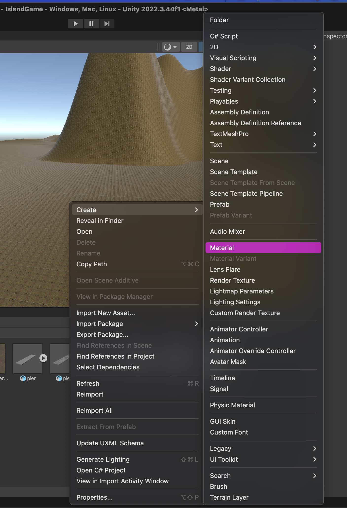
Now go into the Lighting window (if hidden enable it under the Window titlebar item) and drag the material onto skybox. Then add the Procedural shader.
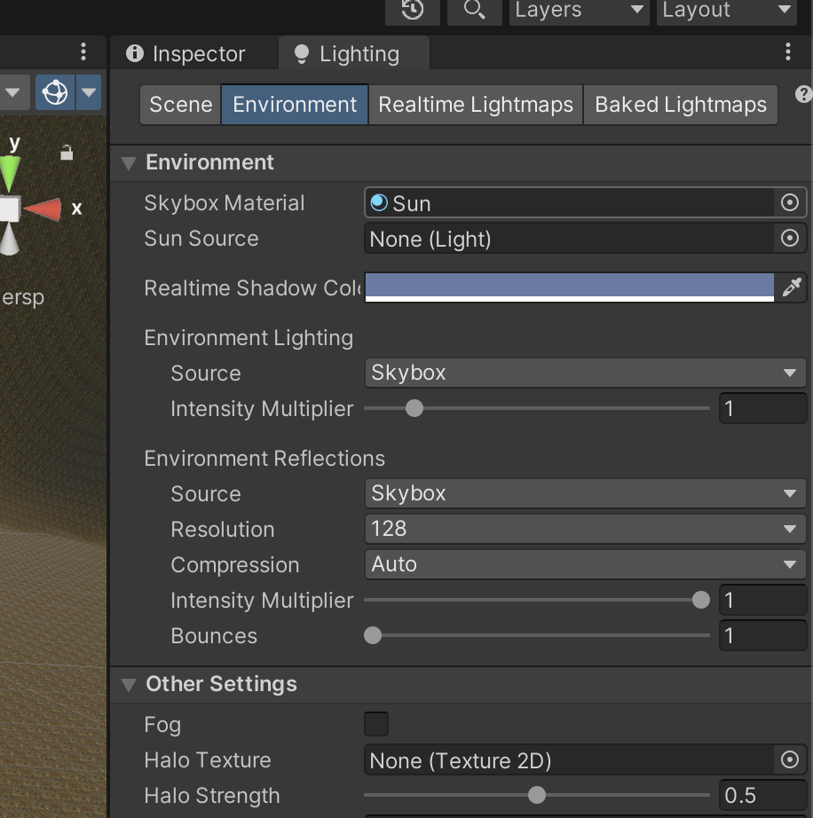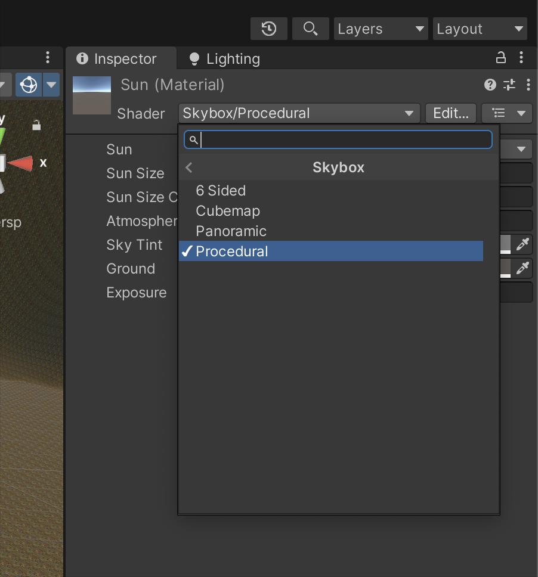
A quick explaination of what these settings do will be needed:
Sun Size controls the size of the sun.